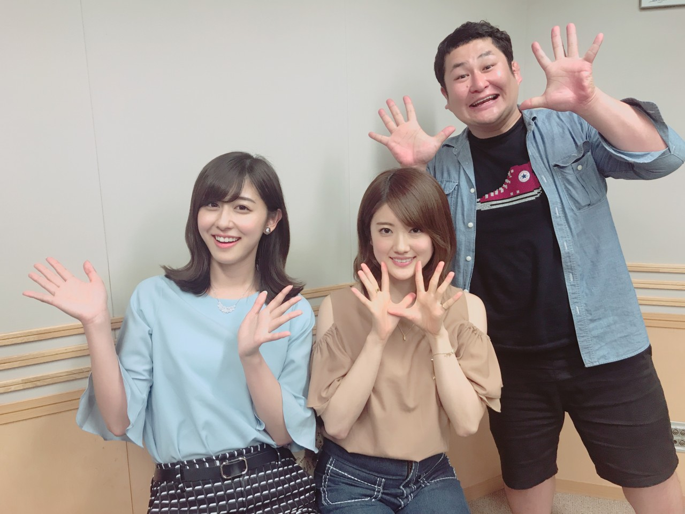

| 2017/05 25 Thu | ラジオウィーク |
ちはるーむへようこそ
5/24に、3rdアルバム
「生まれてから初めてみた夢」がリリースされました！
皆さんチェックしてくださっていますか〜☺︎
そんな今週は私は
ラジオウィークでした。
月曜日23時からはレコメン!、
そして水曜日27時すぎからはANN0に
出演させていただきました◎
月曜日23:00〜23:30のレコメン!に

オテンキのりさんと、
ちまと一緒に。
初めてお会いした
のりさんは優しくて陽気で面白い方でした！
ちまは1ヶ月ぶりだったとか♬
とても楽しい時間で、あっという間でした。
私もまたいつか呼んでいただけますように☺︎
そして水曜日深夜から今朝にかけての
ラジオ出演。
なーちゃんの誕生日ということもあり
ANN0前にやっていた、
西野七瀬のオールナイトニッポンにも
少し出演させていただきました。
お祝いできて良かったです◎
「ナナ」Tシャツ似合ってたな〜
私、「バ」Tシャツ欲しい...笑
そしてその後の
乃木坂46新内眞衣のオールナイトニッポン0！
にもゲスト出演させていただきました。
27:00〜28:30。
眠くなかったですか〜？
私は元気でした！
このANN0では、
元ヤン⁉︎企画や2推しの女⁉︎企画など...
盛りだくさんでした！
私は2推し属性はない...と信じています。∠( ˙-˙ )／笑
さらにさらに
お天気お姉さんとして、
中継までさせていただきました！
原稿読みは難しかったけれど
お天気お姉さんになりきるのは
とっても楽しかったです♡♡
またいつか上達した姿を
見せられたらいいな。

ラジオ聞いてくださっていた方、
LINE LIVE、showroomを観てくださった方、
本当にありがとうございました！！
ラジオ、楽しいですね☺︎
そして全然寝てないはずの今日は
何故かいつもよりも眠くありませんでした。
何故だろうか〜
元気に授業受けられたよ( ¨̮ )笑
おやすみ
斎藤ちはる
コメント(296)
2017/05/25 23:48